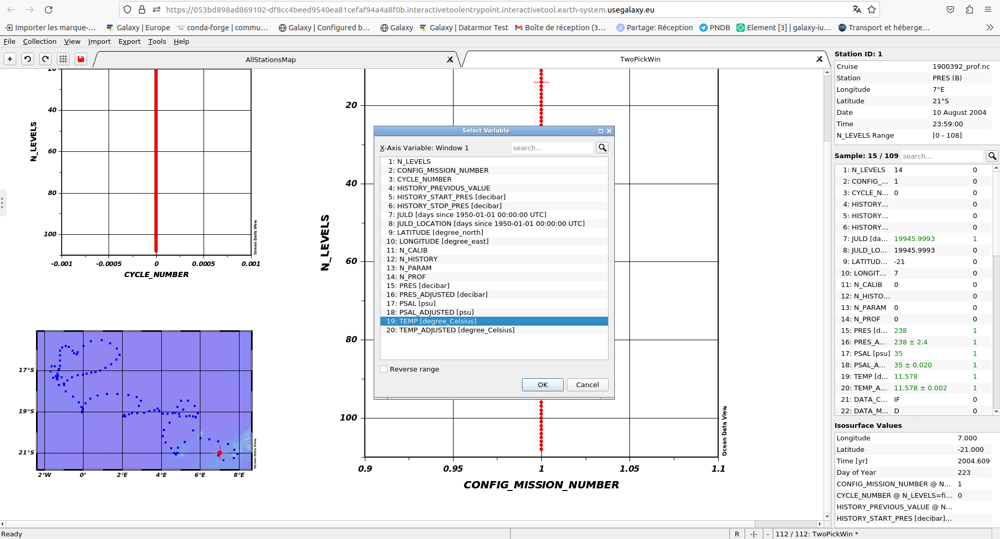
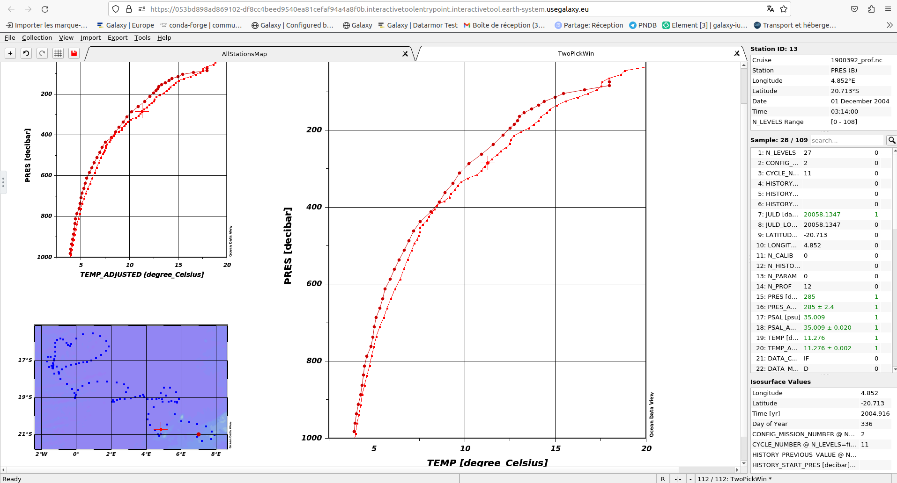
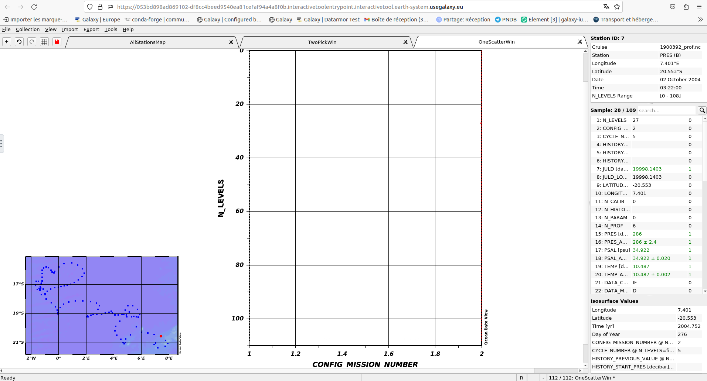
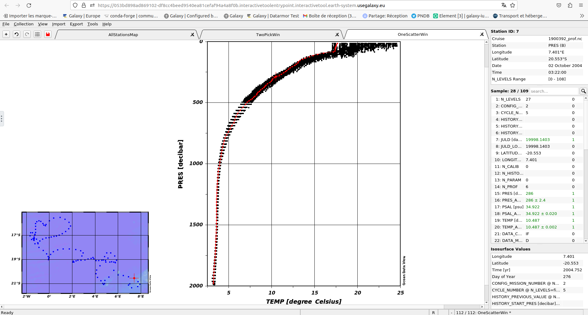
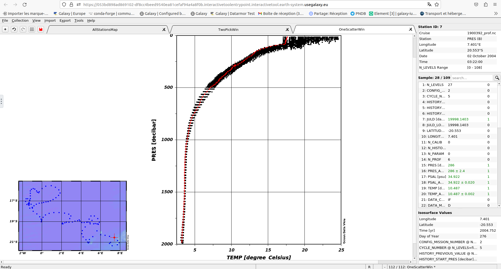

Through this tutorial you will learn here how to access, filter and import netCDF data through using ODV Galaxy interactive tool:
Ocean Data View (ODV) is a software package for the interactive exploration, analysis and visualization of oceanographic and other geo-referenced profile, time-series, trajectory or sequence data. To know more about ODV go check the official page
ODV is now integrated in Galaxy as an interactive tool. This kind of tools is working differently than classical tools as it allows the user to interact with a dedicated graphical interface. This kind of tools is used to give access to Jupyter notebooks, RStudio or R Shiny apps for example.
To use ODV, you need to use the dedicated form, you can specify input datasets from your hisrtory you want to use in ODV, then press the execute button to launch a ODV instance. When the graphical user interface of ODV is ready to be used, a URL will be displayed at the top of the Galaxy center panel. If you don’t see it, you can see and access it through the “Active InteractiveTools” space of the “User” menu or you can click on galaxy-eye on the tool in the history.
Once you finished your work on ODV, if you want to retrieve data and/or entire project, you need to save files in ODV/galaxy/outputs, then quit ODV properly through the “Project” Menu tab.
You can come back to where you left off the tutorial anytime by clicking level.
Hands-on: Log in to Galaxy
Open your favorite browser (Chrome, Safari or Firefox as your browser, not Internet Explorer!)
Click galaxy-uploadUpload Data at the top of the tool panel
Select galaxy-wf-editPaste/Fetch Data
Paste the link(s) into the text field
Press Start
Close the window
“Select if you are using a ODV collection in a zip folder or if you have your own raw data”: The data you are using are a Netdcdf or tabular text files
Select your new data before deploying ODV instance by pressing execute
Access ODV
Go to User > Active InteractiveTools
Wait for the ODV to be running (Job Info)
Click on ODV
Argo is an international program to observe the interior of the ocean with a fleet of profiling floats drifting in the deep ocean currents (check it out on the argo site). Argo GDAC is a dataset of 5 billion in situ ocean observations from 18.000 profiling floats (4.000 active) which started 20 years ago. Argo GDAC dataset is a collection of 18.000 NetCDF files. It is a major asset for ocean and climate science, a contributor to IOCCP reports. Argo 2023
You can expand the ODV left panel (where there are 3 dots, vertically) to access the “clipboard” menu, and paste the content you want to paste on a ODV form. From there you can copy paste everything from one side to the other. Then, click outside of this panel to collapse it.
If at one point your ODV interface becomes grey with a red panel “X ODV - Disconnected”, do NOT panic ;) you just need to reload your tab (circular arrow top left)
Hands-on: Loading Argo data
Go to the top left of ODV and click on “Open…”
Click on “1900392_prof.nc” of the pop-up screen and on Open
Press Next > for “Select Dimensions (Step 1 of 4)”
Press Next > for “Associate Meta Variables (Step 2 of 4)”
Press Next > for “Select Primary Variable (Step 3 of 4)”
Press Finish for “Subset Dimensions (Step 4 of 4)”
“Enter netCDF Setup Name:” write “argo_prof_data”, then, press OK
What are the longitude and latitude of the red dot ?
On the to right window you can read Longitude 7°E and Latitude 21°S.
Create profiles curves
Hands-on: Create a multiple windows view
On the top left press +
Click on 2 Station Windows
Two more slots appear follow the indication and press + on your keyboard (or SHIFT and +).
Here you have created a multiple view on ODV
Hands-on: Create profiles
On the biggest window click on the right side of your mousse
Select X-Variable, press TEMP [degree_Celsius] and OK.

Select Y-Variable, press PRES [decibar] and OK. Your profile is now uspide down.
To correct that click right again go on Y-Variable and on the bottom of the pop-up screen check the box “Reverse range” and OK.
For the smallest window do the same but for the abscisse select TEMP_ADJUSTED [degree_Celsius]. This can be usefull to compare the 2 curves.
You now know how to create multiple profiles curves on ODV from netCDF data.
Question
How do you do if you want to compare the profiles with another station ?
With your keyboard you can use the arrows left and right and go through the different stations one-by-one.

Hands-on: Change the station of reference
Go on the map on the bottom left
Click right and select Station Filter
Then, select and click on Customize
In “Station ID” write the number of the new station of reference (both boxes)
Everything has dissapeared !!! Don’t panik it’s totally normal ;)
Press + on your keyboard (or SHIFT and +)
The curves reapeared ! And they correspond to your knew station of reference !
To make the other stations reapear, to allow you to navigate in the other stations while conserving your new station of reference, go on the map once again.
Click right and select Station Filter
This time select and click on Relax
And now you’re back with all your stations visible !
Create one single sum-up profile curve
Hands-on: Create a scatter plot
On the top left press +
Select 1 SCATTER Window another tab opens (you now have 3 of them)

On the window click on the right side of your mousse
Select X-Variable, press TEMP [degree_Celsius] and OK.
Select Y-Variable, press PRES [decibar], at the bottom of the pop-up check the box “Reverse range” and OK.
You now have the final image with all the curves for each stationside by side. You can navigate in them by using the arrows left/right on your keyboard with the red curve being the station you’re on.

Hands-on: Save your analysis
Click right on the scatter image and select Save plot as
In the pop-up select and go in the ODV/galaxy/outputs folder
Once you’re in the folder you can rename your scatter plot in “File Name:” by “1900392_prof_scatter”
You can also change the “Files of type:” by “PNG (*.png *.PNG)
Click on Save, then OK and OK.
On the map click right and then Save Map As…
Still in the ODV/galaxy/outputs folder, rename it “1900392_prof_map” check that the “Files of type:” is “PNG (*.png *.PNG)
Click on Save, then OK and OK
Now, if you have finished with your analysis you can exit ODV. To do so you need to do it properly.
On th top left click on File select Exit
If you want to save the other window also click on Yes. Here we don’t need it so click No.
You can now go back on your Galaxy instance.
Now, after waiting for everything to turn green in your history, you can see 2 new outputs “1900392_prof_scatter” and “1900392_prof_map”
Hands-on: View in Galaxy
In the history panel click on the galaxy-eye (eye) icon of your output.
You can now visualize the outputs in galaxy middle pannel.
Great you now know how to use argo floater data to create profiles curves in Ocean Data View (ODV) within Galaxy.
Extra information
Coming up soon follow ups tutorials on Coastal Water Dynamics workflow (and other Earth-System related trainings). Keep an galaxy-eye open if you are interested !
You've Finished the Tutorial
Please also consider filling out the Feedback Form as well!
Key points
Manage Argo glider’s data and learn to process netcdf data.
Build a map of the stations and create profiles curves with ODV
Did you use this material as an instructor? Feel free to give us feedback on how it went.
Did you use this material as a learner or student? Click the form below to leave feedback.
Hiltemann, Saskia, Rasche, Helena et al., 2023 Galaxy Training: A Powerful Framework for Teaching! PLOS Computational Biology 10.1371/journal.pcbi.1010752
Batut et al., 2018 Community-Driven Data Analysis Training for Biology Cell Systems 10.1016/j.cels.2018.05.012
@misc{climate-ocean-data-view,
author = "Marie Josse",
title = "Ocean Data View (ODV) (Galaxy Training Materials)",
year = "",
month = "",
day = ""
url = "\url{https://training.galaxyproject.org/training-material/topics/climate/tutorials/ocean-data-view/tutorial.html}",
note = "[Online; accessed TODAY]"
}
@article{Hiltemann_2023,
doi = {10.1371/journal.pcbi.1010752},
url = {https://doi.org/10.1371%2Fjournal.pcbi.1010752},
year = 2023,
month = {jan},
publisher = {Public Library of Science ({PLoS})},
volume = {19},
number = {1},
pages = {e1010752},
author = {Saskia Hiltemann and Helena Rasche and Simon Gladman and Hans-Rudolf Hotz and Delphine Larivi{\`{e}}re and Daniel Blankenberg and Pratik D. Jagtap and Thomas Wollmann and Anthony Bretaudeau and Nadia Gou{\'{e}} and Timothy J. Griffin and Coline Royaux and Yvan Le Bras and Subina Mehta and Anna Syme and Frederik Coppens and Bert Droesbeke and Nicola Soranzo and Wendi Bacon and Fotis Psomopoulos and Crist{\'{o}}bal Gallardo-Alba and John Davis and Melanie Christine Föll and Matthias Fahrner and Maria A. Doyle and Beatriz Serrano-Solano and Anne Claire Fouilloux and Peter van Heusden and Wolfgang Maier and Dave Clements and Florian Heyl and Björn Grüning and B{\'{e}}r{\'{e}}nice Batut and},
editor = {Francis Ouellette},
title = {Galaxy Training: A powerful framework for teaching!},
journal = {PLoS Comput Biol} Computational Biology}
}
Funding
These individuals or organisations provided funding support for the development of this resource
Questions:
Open image in new tab


{kind=link}
{kind=link}
{kind=link}
You now have the final image with all the curves for each stationside by side. You can navigate in them by using the arrows left/right on your keyboard with the red curve being the station you’re on. 
{kind=link}
{kind=link}
{kind=link}
{kind=link}